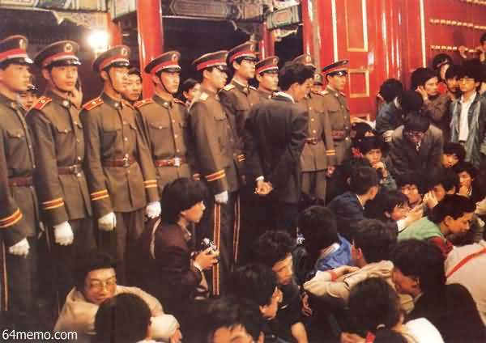
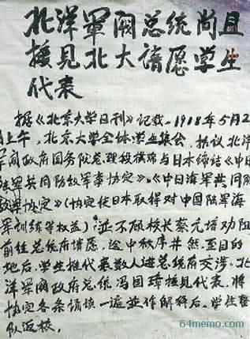
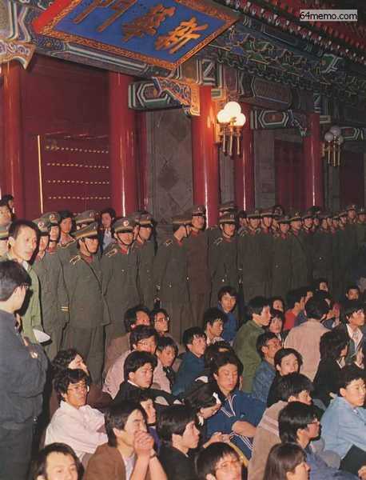
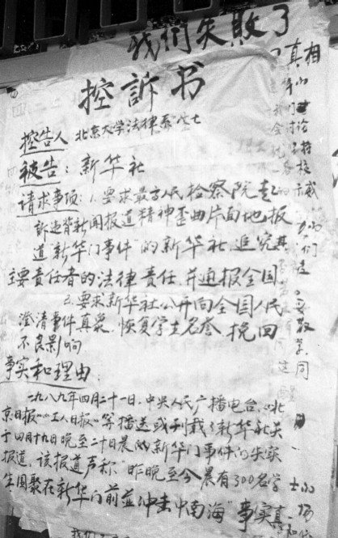
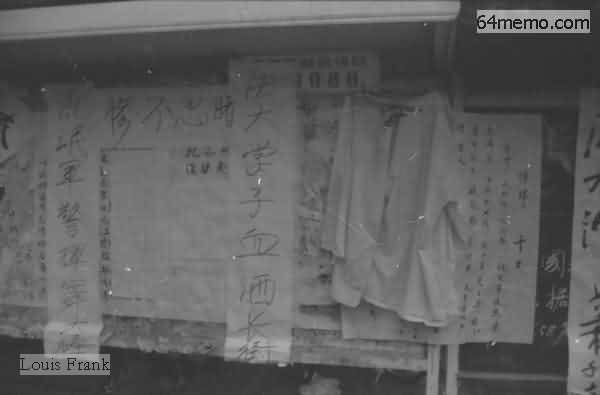
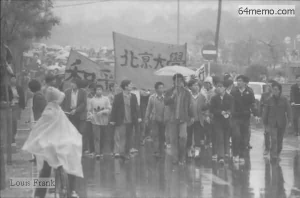
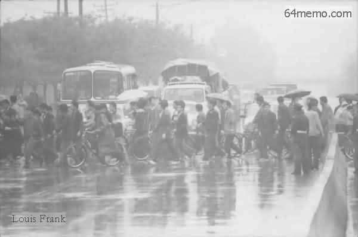
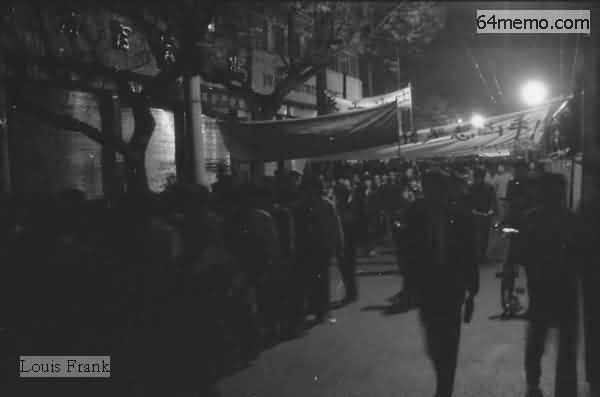
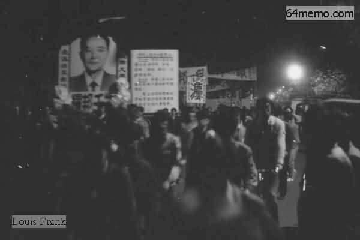
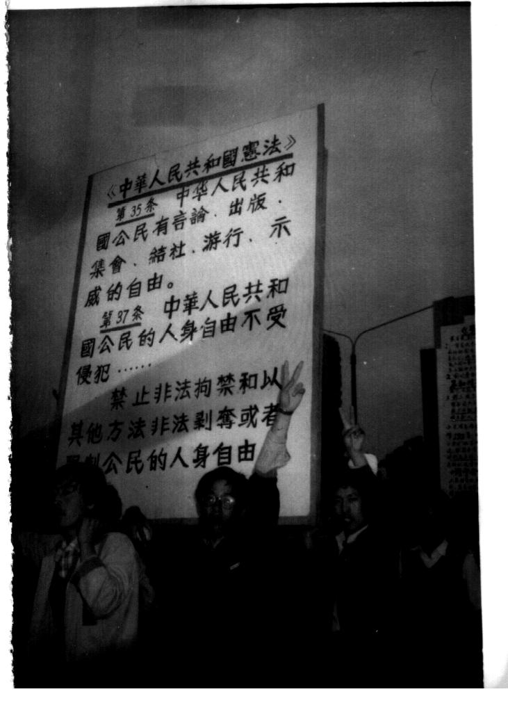

上一个帖子介绍了4月18日在人民大会堂的和平请愿。今天来聊一下：请愿引发的“新华门流血事件”。
考虑某些网友对北京不熟，简单扫盲一下“中南海”及“新华门”。
中南海这个名称在元代就有了，它是“中海”与“南海”的合称（蒙古语中称“湖泊”为“海”）。中南海地处故宫西边，风景相当不错，自古以来就是皇家禁地。天朝开国之后，毛太祖定都北京，自然也看上了这块宝地，并把它作为裆中央的驻地。很多朝廷高官不光在中南海办公，更索性拖家带口地住进来。所以在当今天朝，中南海就等同于古代的“大内”。
而“新华门”是中南海的南门，也是正门（相当于中南海的门面）。此门位于西长安街上，在门的两边，至今还保留着两条颇有文革遗风且非常恶心的标语：
战无不胜的毛泽东思想万岁
伟大的中国共产党万岁
另外，新华门的影壁上有毛太祖亲笔题写的“为人民服务”（想想毛腊肉害死几千万人，太他妈讽刺了）。
扫盲结束，言归正传。先来说说事情经过。
上回说到：4月19日晚7点，人民大会堂里面的官员迫于压力，终于接受了学生的请愿书。于是，部分请愿的学生认为目的已经达到，就回学校了。但是还有部分请愿的学生对官方的举动不满。他们觉得：官方只派出3个小吏，难道就把上万名静坐的学生打发了？简直岂有此理嘛！所以，这些学生不肯善罢甘休，想让更高级别的官员出来对话。
晚上8、9点钟，又有大约三千多人大、北大、北理工的学生，从学校一路游行到广场。他们看到人民大会堂门口有不少静坐的学生，也纷纷加入进来。这批后面来的学生，以为官方一直没有接受学生的请愿，心中不爽。
晚上10点多，天安门广场上仍然聚集了几万人。其中有几千学生及部分群众，开始向新华门进发——他们要去找更高级别的官员讨个说法。
到了新华门之后，学生们要求李鹏（当时是总理）出来见面并接受请愿书（请愿书的内容，前一个帖子已经介绍，此处不再啰嗦）。但等了好一阵子，不要说李鹏，连个打招呼的官员都没见着。
学生们再次表现出极好的耐心，一直在新华门前面静坐，每隔一段时间就高喊“李鹏出来”。

（各高校学生在新华门前面静坐）
19日凌晨4点，官方开始在新华门广播北京市政府通告。通告称：
前一天晚上，李鹏甘当缩头乌龟，没有露面。因此，很多学生觉得当局不重视他们。19日，北大等高校纷纷出现大字报，一方面批评政府不跟学生对话，另外也号召19日晚再去新华门。

（某高校大字报，讽刺当局不如北洋政府）
或许是大字报的号召起了作用，19日晚，有更多的大学生（据说1到2万）聚集到新华门。当天，新华门的警察也增加了许多，他们组成一道人墙，防止学生闯入。其实当时的大学生并不想硬闯新华门，他们只是希望党国的领导出来跟他们见个面，接受学生的请愿书，仅此而已。《改革历程——赵紫阳回忆录》这本书中，有提到那天的事情：

（19日晚，更多的大学生聚集到新华门静坐抗议）
但是，中南海里面，依旧没有任何官员出来跟学生们见面。到了凌晨3点半左右，官方又开始广播了。这次的广播，措词更强硬了：
（从照片可以看出，有军警在挥舞皮带）
有位女学生被打了之后，情急之下喊了一句：打倒共产党。要知道现场有不少党国的便衣，自然就把这句话报上去了。结果就让朝廷的保守派捡了个现成的借口（待会儿细说）。其实，大伙儿只要看看学生请愿的“北大七条”，就会明白，当时学生们的政治诉求，只能算是【很温和的改良】。
以上就是"新华门事件"的经过。这是六四期间第一起流血事件，学生称之为“420惨案”，官方称之为“冲击新华门事件”。这次事件，导致学生和朝廷的矛盾大大加深。
前面说了，中南海是“大内重地”。而大学生们居然敢到这种地方搞事，而且连着闹两天，简直太不给党国面子了。这样一个大好机会，朝廷的保守派当然不会放过。他们把学生请愿说成是：别有用心、有幕后黑手、妄图颠覆政权......下面引用几段保守派元老的论调（摘自《天安门文件》）。
对改革派而言，当时有一个很不凑巧的事情——赵紫阳已经安排了，要在4月23日对北朝鲜进行正式访问。而20日凌晨刚刚发生流血冲突。官方跟学生的矛盾越激化，就越容易激怒老邓。老邓的政治观点，俺在前面的帖子已经细说过了。一旦老邓被激怒，就会铁腕镇压，然后朝廷的政治气氛就会转向保守，搞不好总书记又要换人——而这对改革派非常不利（大伙儿不妨回顾一下八六学潮引发的胡耀邦下台）。
当时的副总理田纪云，是赵紫阳的老部下（可算是赵的亲信了）。他对此事很着急，当天（20日）就去找老赵，劝其推迟或取消对北朝鲜的访问。据《天安门文件》记载，两人有如下对话：
在所有被打的学生中，影响最大的是政法大学的王志勇。他被武警打得满头流血，左眼肿得睁不开，送到医院缝了3针。北医三院出具的证明是：头皮裂伤，轻度脑震荡，眼外伤。
20日上午，政法大学就把王志勇的血衣挂在校园内。看到血衣的学生，无不愤慨。下午，出现了标题为《天理何在? 公道何在? 法律何在?》的大字报。该大字报被复印成传单，在各大高校广为散发。
北大、人大、清华也出现类似的大字报，知名的有《新华门血案》《血》《“420”惨案》。

（北京大学法律系的大字报：《控诉书》）

（清华大学的标语：
虽然20日这天下雨，但是多个高校（北大、北航、北师大、人大 ...）的学生依然冒雨游行。北大和北航热情最高，一路走到广场。

（20日，冒雨游行） 
（20日，冒雨游行）
由于21日的人民日报颠倒黑白，更加激怒了高校的学生。有些学生为了发泄不满，在校内焚烧当天的人民日报。另外一些学生开始意识到宣传的重要性——开始自费复印传单，介绍学生被打的真相，然后到闹市区向市民散发。
由于王志勇的缘故，政法大学的学生开始号召全校罢课，并贴出大字报，提出4点要求：

（21日晚间，各个高校联合游行，规模之大，人数号称10万）
这次游行的一个亮点是政法大学学生拿的一块大白板，上面写着：

（政法大学学生举着大白板，上面写着宪法第35条、第37条）

（政法大学学生举着大白板，上面写着宪法第35条、第37条）
为啥要在21日晚上搞联合游行捏？因为4月22日，官方要在人民大会堂举行老胡的追悼会。为了防止学生闹事，官方通知说：22日当天，天安门广场周边要交通管制。所以，学生们就在21日晚，提前进入广场，然后静坐一夜，等到第二天开追悼会。
今天就先聊到这里。下一个帖子，俺来说说胡耀邦的官方追悼会和民间追悼会。
（本文照片引自 六四档案 和 自由中国论坛）
回到本系列的目录
★扫盲一下中南海及新华门
考虑某些网友对北京不熟，简单扫盲一下“中南海”及“新华门”。
中南海这个名称在元代就有了，它是“中海”与“南海”的合称（蒙古语中称“湖泊”为“海”）。中南海地处故宫西边，风景相当不错，自古以来就是皇家禁地。天朝开国之后，毛太祖定都北京，自然也看上了这块宝地，并把它作为裆中央的驻地。很多朝廷高官不光在中南海办公，更索性拖家带口地住进来。所以在当今天朝，中南海就等同于古代的“大内”。
而“新华门”是中南海的南门，也是正门（相当于中南海的门面）。此门位于西长安街上，在门的两边，至今还保留着两条颇有文革遗风且非常恶心的标语：
战无不胜的毛泽东思想万岁
伟大的中国共产党万岁
另外，新华门的影壁上有毛太祖亲笔题写的“为人民服务”（想想毛腊肉害死几千万人，太他妈讽刺了）。
★事件经过
扫盲结束，言归正传。先来说说事情经过。
◇4月18日晚至19日凌晨
上回说到：4月19日晚7点，人民大会堂里面的官员迫于压力，终于接受了学生的请愿书。于是，部分请愿的学生认为目的已经达到，就回学校了。但是还有部分请愿的学生对官方的举动不满。他们觉得：官方只派出3个小吏，难道就把上万名静坐的学生打发了？简直岂有此理嘛！所以，这些学生不肯善罢甘休，想让更高级别的官员出来对话。
晚上8、9点钟，又有大约三千多人大、北大、北理工的学生，从学校一路游行到广场。他们看到人民大会堂门口有不少静坐的学生，也纷纷加入进来。这批后面来的学生，以为官方一直没有接受学生的请愿，心中不爽。
晚上10点多，天安门广场上仍然聚集了几万人。其中有几千学生及部分群众，开始向新华门进发——他们要去找更高级别的官员讨个说法。
到了新华门之后，学生们要求李鹏（当时是总理）出来见面并接受请愿书（请愿书的内容，前一个帖子已经介绍，此处不再啰嗦）。但等了好一阵子，不要说李鹏，连个打招呼的官员都没见着。
学生们再次表现出极好的耐心，一直在新华门前面静坐，每隔一段时间就高喊“李鹏出来”。
（各高校学生在新华门前面静坐）
19日凌晨4点，官方开始在新华门广播北京市政府通告。通告称：
现在有人企图制造和挑起事端，这已不是正常的悼念活动。希望广大群众提高警惕，不要被别有用心的人所利用。与此同时，有大批警察到达新华门，驱散聚集的人群。当晚未发生冲突。
◇4月19日晚至20日凌晨
前一天晚上，李鹏甘当缩头乌龟，没有露面。因此，很多学生觉得当局不重视他们。19日，北大等高校纷纷出现大字报，一方面批评政府不跟学生对话，另外也号召19日晚再去新华门。
（某高校大字报，讽刺当局不如北洋政府）
或许是大字报的号召起了作用，19日晚，有更多的大学生（据说1到2万）聚集到新华门。当天，新华门的警察也增加了许多，他们组成一道人墙，防止学生闯入。其实当时的大学生并不想硬闯新华门，他们只是希望党国的领导出来跟他们见个面，接受学生的请愿书，仅此而已。《改革历程——赵紫阳回忆录》这本书中，有提到那天的事情：
我曾调公安部录相来看。所谓学生冲击新华门事件，实际上在前面的学生一直在喊：要守纪律，不要犯错误！主要是后面围观的人非常多。学生在前面提要求啊，要求见什么人啊，后面的人往前涌，往前推，秩序有点乱。后来学生自己组织了纠察队，把学生和围观的人隔开了。
（19日晚，更多的大学生聚集到新华门静坐抗议）
但是，中南海里面，依旧没有任何官员出来跟学生们见面。到了凌晨3点半左右，官方又开始广播了。这次的广播，措词更强硬了：
蓄意肇事的少数人，如果一意孤行，一切后果自负。4点多，大批公安武警以及多辆公交车到达现场。这次和昨天不同，这批公安武警到了之后，把不肯离开的学生拖到公交车上（准备用公交送回学校）。但是现场的很多学生误以为这些公交车会把他们送到牢房。于是双方就发生了争执和扭打。一旦打起来，大学生肯定不是当兵的对手，现场有几十名学生被打伤。另据某些资料记载：军警还使用了警棍和铜头皮带，导致多名学生流血。
（从照片可以看出，有军警在挥舞皮带）
有位女学生被打了之后，情急之下喊了一句：打倒共产党。要知道现场有不少党国的便衣，自然就把这句话报上去了。结果就让朝廷的保守派捡了个现成的借口（待会儿细说）。其实，大伙儿只要看看学生请愿的“北大七条”，就会明白，当时学生们的政治诉求，只能算是【很温和的改良】。
以上就是"新华门事件"的经过。这是六四期间第一起流血事件，学生称之为“420惨案”，官方称之为“冲击新华门事件”。这次事件，导致学生和朝廷的矛盾大大加深。
★朝廷的反应
◇保守派的反应
前面说了，中南海是“大内重地”。而大学生们居然敢到这种地方搞事，而且连着闹两天，简直太不给党国面子了。这样一个大好机会，朝廷的保守派当然不会放过。他们把学生请愿说成是：别有用心、有幕后黑手、妄图颠覆政权......下面引用几段保守派元老的论调（摘自《天安门文件》）。
彭真（八元老之一）对陈希同说：正是由于保守派从中怂恿，党国的喉舌《人民日报》在次日接连发表了两篇：新华社评论《维护社会稳定是当前大局》、新华社记者报道《数百人围聚新华门前制造事端》。在《数百人围聚新华门前制造事端》一文，只字不提学生被打伤，反而重点强调：有4名警察被学生打伤。这要是让不明真相的群众看了，多半会以为是学生主动闹事并袭警。
这几天北京这么乱，要防止出现第二次“文化大革命”，这些学生的背后一定有幕后黑手，一定要下决心尽快查个水落石出。
王震（八元老之一）对邓小平说：
小平同志呵，这些学生要造反啦！他们冲新华门啦！一定要马上采取措施呀！
姚依林（政治局常委）对宋平说：
一批资产阶级自由化分子早就在等待时机，计划蓄谋已久。他们正在利用学生的爱国热情。所以，要尽快揭露真相。这几天的趋势表明，学生闹事有演变成动乱的可能。
◇改革派的反应
对改革派而言，当时有一个很不凑巧的事情——赵紫阳已经安排了，要在4月23日对北朝鲜进行正式访问。而20日凌晨刚刚发生流血冲突。官方跟学生的矛盾越激化，就越容易激怒老邓。老邓的政治观点，俺在前面的帖子已经细说过了。一旦老邓被激怒，就会铁腕镇压，然后朝廷的政治气氛就会转向保守，搞不好总书记又要换人——而这对改革派非常不利（大伙儿不妨回顾一下八六学潮引发的胡耀邦下台）。
当时的副总理田纪云，是赵紫阳的老部下（可算是赵的亲信了）。他对此事很着急，当天（20日）就去找老赵，劝其推迟或取消对北朝鲜的访问。据《天安门文件》记载，两人有如下对话：
田纪云：俺觉得：这大概是老赵在六四期间的第一个重大失误（后面的帖子会细说）。
紫阳同志，这几天北京和全国一些城市的局势不是很太平，您是不是可以考虑推迟对朝鲜的计访问？
赵紫阳：
这个意见我也考虑过。不过，随意更改预定的国事访问，会让外界揣测我们政局不稳。所以，还是按预定计划执行。
★学生的反应
在所有被打的学生中，影响最大的是政法大学的王志勇。他被武警打得满头流血，左眼肿得睁不开，送到医院缝了3针。北医三院出具的证明是：头皮裂伤，轻度脑震荡，眼外伤。
◇4月20日
20日上午，政法大学就把王志勇的血衣挂在校园内。看到血衣的学生，无不愤慨。下午，出现了标题为《天理何在? 公道何在? 法律何在?》的大字报。该大字报被复印成传单，在各大高校广为散发。
北大、人大、清华也出现类似的大字报，知名的有《新华门血案》《血》《“420”惨案》。
（北京大学法律系的大字报：《控诉书》）
（清华大学的标语：
流氓军警挥舞大棒 法大学子血洒长街）
虽然20日这天下雨，但是多个高校（北大、北航、北师大、人大 ...）的学生依然冒雨游行。北大和北航热情最高，一路走到广场。
（20日，冒雨游行）
（20日，冒雨游行）
◇4月21日
由于21日的人民日报颠倒黑白，更加激怒了高校的学生。有些学生为了发泄不满，在校内焚烧当天的人民日报。另外一些学生开始意识到宣传的重要性——开始自费复印传单，介绍学生被打的真相，然后到闹市区向市民散发。
由于王志勇的缘故，政法大学的学生开始号召全校罢课，并贴出大字报，提出4点要求：
1. 从21日至22日罢课两天，抗议警方非法行为到了21日晚间，各个高校举行联合游行。规模非常之大，人数号称10万（实际人数约4~5万）。这是建国以来，人数最多的一次学生示威游行。也是六四期间，各个高校第一次联合游行。
2. 要求政府严惩凶手
3. 警方必须在报上公开对这种行为道歉，如实报导伤案经过
4. 第 2, 3 条必须在23日晚5时前予以答覆，否则进一步采取行动
（21日晚间，各个高校联合游行，规模之大，人数号称10万）
这次游行的一个亮点是政法大学学生拿的一块大白板，上面写着：
宪法第35条
中华人民共和国公民有言论、出版、集会、结社、游行、示威的自由。
宪法第37条
中华人民共和国公民的人身自由不受侵犯......
（政法大学学生举着大白板，上面写着宪法第35条、第37条）
（政法大学学生举着大白板，上面写着宪法第35条、第37条）
为啥要在21日晚上搞联合游行捏？因为4月22日，官方要在人民大会堂举行老胡的追悼会。为了防止学生闹事，官方通知说：22日当天，天安门广场周边要交通管制。所以，学生们就在21日晚，提前进入广场，然后静坐一夜，等到第二天开追悼会。
今天就先聊到这里。下一个帖子，俺来说说胡耀邦的官方追悼会和民间追悼会。
（本文照片引自 六四档案 和 自由中国论坛）
回到本系列的目录
版权声明
本博客所有的原创文章，作者皆保留版权。转载必须包含本声明，保持本文完整，并以超链接形式注明作者编程随想和本文原始地址：
https://program-think.blogspot.com/2012/02/june-fourth-incident-13.html
本博客所有的原创文章，作者皆保留版权。转载必须包含本声明，保持本文完整，并以超链接形式注明作者编程随想和本文原始地址：
https://program-think.blogspot.com/2012/02/june-fourth-incident-13.html